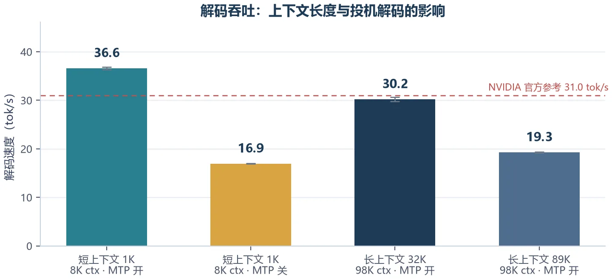
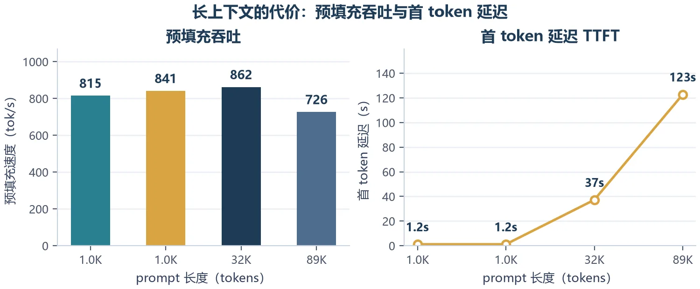
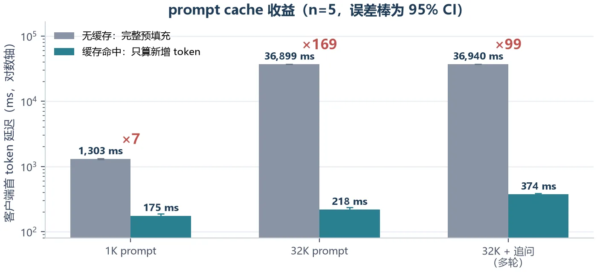
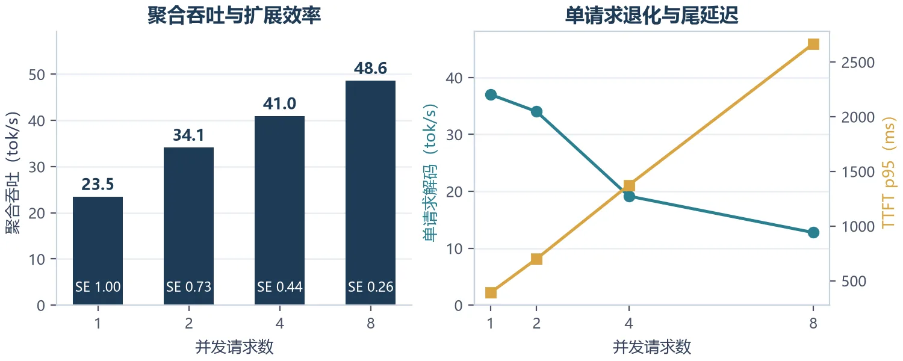
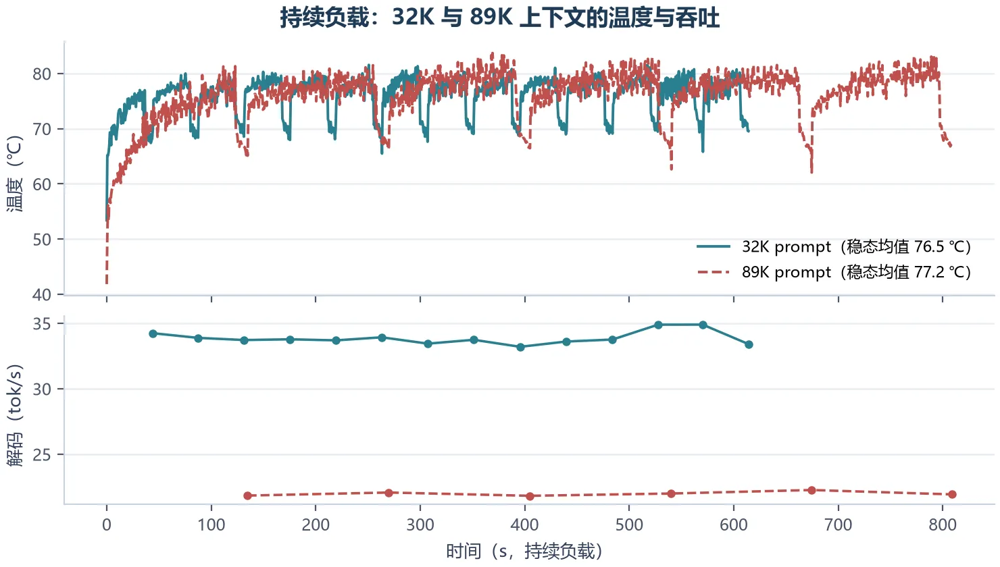
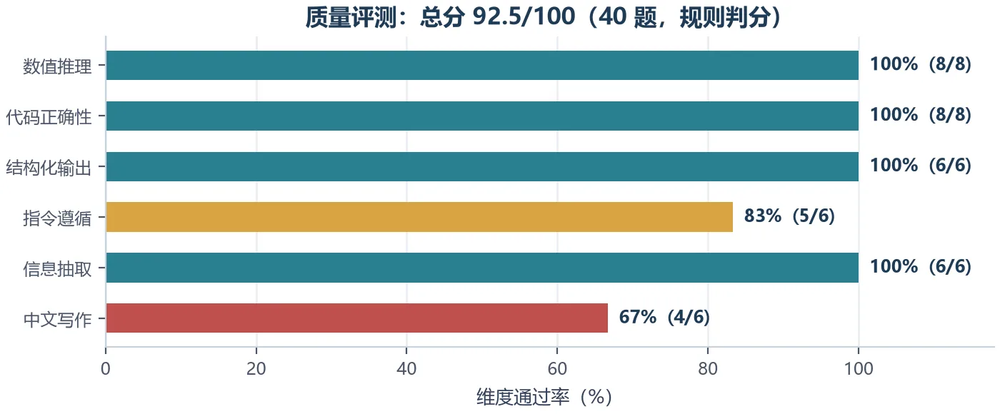

27B IQ4_XS 可以稳定运行，甜点是 1–2 个并发用户
结论：在 Windows 可见 32.2 GiB（物理 64 GiB 统一内存）的 RTX Spark N1X 上，Qwen3.8-27B 的 IQ4_XS 量化可以稳定运行：短上下文解码 36.6 tok/s，89K 长上下文 19.3 tok/s；开启 prompt cache 后，同一上下文的第二轮首 token 从 36.9 s 降到 0.22 s。这台机器适合 1–2 个并发用户，长文档适合批处理式使用。
| 指标 | 结果 | 条件 |
|---|---|---|
| 短上下文解码 | 36.6 tok/s（n=5，95% CI ±0.34） | 8K ctx，994 token prompt，MTP 开 |
| 长上下文解码 | 30.2 tok/s（32K）/ 19.3 tok/s（89K） | 98K ctx，MTP 开 |
| 首 token 延迟 | 1.2 s / 37 s / 123 s | 1K / 32K / 89K prompt |
| prompt cache 收益 | ×7.5 / ×169 / ×99 | 1K / 32K / 32K+追问 |
| 并发扩展 | 2 路 1.45×、4 路 1.74×、8 路 2.07× | 每请求约 23 token |
| 持续负载 | 32K 76.5 °C / 89K 77.2 °C 平台，无持续降频 | 10–13.5 分钟 |
| 质量抽测 | 92.5 / 100（思考关）、95.0（思考开，慢 4.4×） | 40 题、6 维度、规则判分 |
| 峰值显存 | 18.3 GiB（重复实验）/ 18.4 GiB（持续负载） | 共 30.5 GiB |
本报告在同一台机器、同一份模型权重、同一套推理栈上，完成了六组测试。所有性能数字均来自服务端 timings 与 0.5 s 粒度的 GPU 采样，每档重复 3–5 次。
测试对象与配置
| 项目 | 配置 |
|---|---|
| GPU | NVIDIA RTX Spark N1X，6144 核 Blackwell，Compute Capability 12.1 |
| 显存 | 专用 FB 31,232 MiB（30.5 GiB）；CUDA 可寻址配额 45.92 GiB；与系统内存同一物理池（统一内存） |
| CPU | Arm 20 核 |
| 系统可见内存 | 32.2 GiB（OS 口径） |
| 物理统一内存 | 64 GiB（SMBIOS 68,719,476,736 B；厂商标称 64 GB） |
| 操作系统 | Windows 11 ARM64 |
| 驱动 / CUDA | 621.40 / CUDA 13.5 |
| 项目 | 配置 |
|---|---|
| 推理引擎 | llama.cpp b12711（b12711-f20c5907c），Windows ARM64 + CUDA 13.5 |
| 模型 | Qwen3.8-27B，GGUF，IQ4_XS（4.25 bpw），27.32B 参数 |
| 权重文件 | 14,352,911,264 B（13.4 GiB） |
| 训练上下文 | 262,144 tokens |
| 推理配置 | 单 slot、KV cache q8_0、-ngl 999（全部层卸载到 GPU） |
| 投机解码 | MTP，草稿长度 3（--spec-type draft-mtp --spec-draft-n-max 3） |
| 服务端点 | OpenAI 兼容 /v1，模型别名 qwen3.8-27b |
测试机处于日常使用状态：桌面环境与若干常驻应用未关闭，GPU 空闲基线约 0.6 GiB，空闲利用率 2–4%。测试期间未做进程隔离、CPU 亲和或独占显存设置，因此结果更接近“真实使用”而非实验室理想值。
“统一内存”对测试意味着什么
物理上，显存与系统内存共享同一 64 GiB 池；对这个推理进程而言，热工作集落在 30.5 GiB 专用 FB 内，CUDA 配额为 45.92 GiB。权重固定占用 13.4 GiB；98K 上下文的 KV 池整块预留约 4.7 GiB（32K 实际使用约 1.6 GiB），加运行时开销合计约 4.8 GiB。按全部实测的最高值 18.4 GiB 计算，30.5 GiB FB 内余量约 12.1 GiB（OS 侧另有 32.2 GiB 可见额度，二者不是同一本账）。
这决定了选型逻辑：不是“模型能否装下”（27B 一定装得下），而是“装下之后还剩多少给系统”。
工作负载、测量口径与质量评分
| 测试项 | prompt 长度 | 上下文 | 每档重复 | 说明 |
|---|---|---|---|---|
| 短上下文 | 994 tokens | 8K | 5 | MTP 开 / 关各一组 |
| 长上下文 | 32,018 / 89,123 tokens | 98K | 5 / 3 | MTP 开 |
| prompt cache | 994 / 32,018 / 32K+追问 | 98K | 5 | 冷启动 vs 缓存命中 |
| 并发 | 约 256 tokens | 32K | 每档 1 次 | 1/2/4/8 路，4×c 个请求 |
| 持续负载 | 32K / 89K | 98K | 10–13.5 分钟 | 完整预填充循环 |
| 质量 | 40 题 | — | 逻辑关闭 / 开启思考各 1 次 | 规则判分 |
测量口径
- 解码 / 预填充吞吐：取服务端
timings.predicted_per_second与prompt_per_second，不含网络与排队。 - 首 token（TTFT）：流式请求下客户端实测到第一个内容块的时间；服务端
prompt_ms作为纯预填充下界同时记录。 - GPU 采样：独立线程每 0.5 s 调一次
nvidia-smi，记录显存、温度、利用率、功耗；实测采样间隔中位 0.68 s。 - 重复与统计：每个性能档位重复 3–5 次，每次重复都重启服务，统计量包含跨启动方差；性能档给出均值与样本标准差，95% 置信区间仅在短上下文给出；并发与质量各 1 次。
- 有效性：非缓存测试校验
timings存在、cache_n=0；3.4 记录cache_n命中数。
固定参数（除 3.4 / 3.5 外）：temperature=0、top_k=1、seed=1234、n_predict=128、batch-size 4096、ubatch-size 512、--parallel 1、请求级 cache_prompt=false。prompt 由 12 段互不相同的技术文本拼接并追加提问，用 /tokenize 校准长度。
| 测试组 | slot | cache_prompt | cache_n 校验 |
|---|---|---|---|
| 3.1–3.3、3.6 性能档 | 1 | false | = 0 |
| 3.4 prompt cache | 1 | true | > 0（记录命中数） |
| 3.5 并发 | 8 | false | = 0 |
并发测试实际使用 --parallel 8；原始配置见 concurrency-8.json 的 config.parallel（原始日志未随站点发布）。
质量评分方案
40 道题、6 个维度、全部由脚本自动判分（不依赖人工或模型裁判）。
| 维度 | 权重 | 题量 | 判分方式 |
|---|---|---|---|
| 数值推理 | 20 | 8 | 最后一个数字与标准答案精确比对 |
| 代码正确性 | 20 | 8 | 代码块在子进程跑断言（8 s 超时） |
| 结构化输出 | 15 | 6 | JSON 可解析 + 字段/类型/值全对 |
| 指令遵循 | 15 | 6 | 要点数、行数、字数、禁用词、纯文本 |
| 信息抽取 | 15 | 6 | 关键字段精确匹配；未提及必须输出 null |
| 中文写作 | 15 | 6 | 结构约束：必含事实词、字数区间、条目数 |
总分 = Σ（维度通过率 × 权重）。写作维度只检查结构与事实覆盖，不评价文采。
六组结果：短上下文快，长上下文被带宽按住
先看单请求，再看 MTP 与上下文的影响；然后把 prompt cache、并发、热稳态和质量分开。每一节都给出“读法”，避免只看平均值。
3.1 单请求性能
| 配置 | prompt | 预填充 tok/s | 首 token | 解码 tok/s | 峰值显存 | 峰值温度 |
|---|---|---|---|---|---|---|
| 短上下文 · MTP 开 | 994 | 815 ± 10 | 1,223 ms | 36.60 ± 0.27（n=5） | 14.4 GiB | 64.9 °C |
| 短上下文 · MTP 关 | 994 | 841 ± 45 | 1,202 ms | 16.94 ± 0.05（n=5） | 13.8 GiB | 65.9 °C |
| 长上下文 32K | 32,018 | 862 ± 14 | 37,253 ms | 30.21 ± 0.41（n=5） | 18.3 GiB | 80.9 °C |
| 长上下文 89K | 89,123 | 726 ± 8 | 122,846 ms | 19.27 ± 0.10（n=3） | 18.1 GiB | 84.0 °C |

读法：前两根柱子的落差是投机解码的收益（×2.16），后两根是上下文长度的代价（−36%）。32K 与官方参考值 31.0 tok/s 基本重合，说明本机在同配方下没有“跑偏”；89K 低约 38%，主因是解码阶段每步都要读取更长的 KV cache，以及 MTP 接受率下降。

读法：整体预填充吞吐随长度只下降约 16%（862 → 726 tok/s 均值）；请求内部前段更快、末段更慢，具体斜率未单独统计。首 token 延迟近似与输入长度成正比：1.2 s / 37 s / 123 s。
3.2 投机解码（MTP）的收益
同一 prompt、同一上下文、cache_n=0，仅切换 MTP：解码 36.60 → 16.94 tok/s（×2.16），显存代价约 0.5–0.6 GiB。两次测量跨启动的离散度分别为 0.7% 与 0.3%，收益稳定。
MTP 对预填充几乎无影响（815 vs 841 tok/s，差 3%，在噪声内）。服务端日志给出的草稿接受率为：1K 0.705 / 0.731、32K 0.765、89K 0.629，平均接受长度 3.26 → 2.89——上下文越长，草稿越难命中，这也是长上下文解码下降的原因之一。
3.3 上下文长度的影响
上下文变长不只拖慢第一个 token，还让之后每一个 token 都变慢。原因是解码阶段每生成一个 token 都要额外读取整段 KV cache；同时 MTP 接受率随长度下降。这一现象在“只看平均值”的 benchmark 里容易被掩盖。
3.4 prompt cache：第二轮首 token 回到 0.4 s 以内
真实对话中，用户每轮只追加一句话，前文不变。prompt cache 让第二轮只预填充新增部分：
| 场景 | 无缓存 | 缓存命中 | 命中 token | 加速 |
|---|---|---|---|---|
| 1K prompt | 1,303 ± 27 ms | 175 ± 14 ms | 990 / 994 | ×7.46 ± 0.55 |
| 32K prompt | 36,899 ± 55 ms | 218 ± 17 ms | 32,014 / 32,018 | ×169 ± 11 |
| 32K + 追问（多轮） | 36,940 ± 78 ms | 374 ± 15 ms | 32,014 / 32,034 | ×98.9 ± 3.2 |

读法：关键在绝对值——命中后首 token 都在 0.4 s 以内，与上下文长度关系不大。缓存只加速预填充，不加速解码（命中后解码仍约 25.5 tok/s）；倍率对分母（冷启动抖动）敏感，应作量级参考。
3.5 并发：8 路只有 2.07×
| 并发 | 聚合吞吐 tok/s | 单请求 tok/s | 首 token p50 / p95 | 扩展效率 |
|---|---|---|---|---|
| 1 | 23.5 | 37.0 | 383 / 390 ms | 1.00 |
| 2 | 34.1 | 34.0 | 665 / 700 ms | 0.73 |
| 4 | 41.0 | 19.2 | 908 / 1,375 ms | 0.44 |
| 8 | 48.6 | 12.8 | 1,819 / 2,667 ms | 0.26 |

读法：8 路并发只把聚合吞吐推到 2.07 倍，单请求解码下降 65%，首 token 中位数涨到 1.8 s。这是典型的带宽争用与排队：每请求约 23 token（模型提前输出 EOS），但四档口径一致，扩展效率仍然可比。
口径：聚合吞吐 = 窗口内全部请求生成 token 总数 ÷ 墙钟（含首 token 与预填充）；单请求 = 服务端 timings 的纯解码速率。两者分母不同，不能直接相除；2.07× 的分母是 1 路聚合 23.5 tok/s，不是 37.0。
结论：适合 1–2 个并发用户。更高并发下每个用户的等待都显著变长，增加并发不如换用激活参数更少的 MoE 模型。
3.6 持续负载与热行为
| 负载 | 时长 / 轮数 | 温度（均值 / 峰值） | SM 时钟均值（窗口最低） | 解码（前 3 → 后 3 轮） |
|---|---|---|---|---|
| 32K prompt | 614 s / 14 轮 | 76.5 / 81.5 °C | 2,405 MHz（1,683） | 33.94 → 34.39 tok/s |
| 89K prompt | 809 s / 6 轮 | 77.2 / 83.4 °C | 2,411 MHz（1,475） | 21.91 → 22.07 tok/s |

读法：两条温度曲线在 3–4 分钟后进入平台，之后分别在 65.8–81.5 °C（32K）与 62.0–83.4 °C（89K）之间波动，没有单调爬升；解码吞吐不降反微升。窗口内出现过零星的低频采样（最低 1,683 / 1,475 MHz），多出现在高利用率时刻且下一采样即恢复——证据支持“10–13.5 分钟内未出现持续降频”，不支持“任何时刻都没有瞬时降频”。
另一个值得注意的现象：持续负载稳态比“每轮重启”的重复实验更快（32K 30.21 → 33.9–34.4，89K 19.27 → 22.0，约 +14%），因为机器已热透、时钟稳定。跨启动与长时间稳态是两套口径。
3.7 质量：92.5 / 95.0，失分在约束类任务
| 维度 | 权重 | 思考关 | 思考开 |
|---|---|---|---|
| 数值推理 | 20 | 8/8 | 8/8 |
| 代码正确性 | 20 | 8/8 | 8/8 |
| 结构化输出 | 15 | 6/6 | 6/6 |
| 指令遵循 | 15 | 5/6 | 6/6 |
| 信息抽取 | 15 | 6/6 | 6/6 |
| 中文写作 | 15 | 4/6 | 4/6 |
| 合计 | 100 | 92.5（46.7 s） | 95.0（203.6 s） |

读法：数学、代码、结构化输出、信息抽取四个维度满分；失分集中在“约束类”任务——字数上限被超出、要求出现的词用了近义表达。这类失败属于“不严格执行指令”，而非能力不足。
思考模式把指令遵循补到 6/6（总分 95.0），但耗时 4.4 倍，且两道写作题因思考耗尽 token 预算而返回空内容。短问答建议关闭思考，复杂推理再开启。
解码为什么受带宽限制
解码每一步都要完整读取一遍权重。按 13.37 GiB 权重、16.94 tok/s 粗算，关闭 MTP 时等效权重读取速率约 227 GiB/s（≈243 GB/s），已接近该平台 LPDDR5X 的理论带宽量级（约 273 GB/s，公开规格）。17 tok/s 更像是被内存带宽按住，而不是算力不足。
投机解码通过“一次前向验证多个候选 token”摊薄权重读取，因此能把解码提到 36.6 tok/s；但它无法改变每 token 仍需读取 KV cache 的事实，所以长上下文下收益递减。
显存容量不是瓶颈，带宽与上下文才是
全部实测峰值 18.3–18.4 GiB，占 30.5 GiB 专用 FB 的 60%，FB 内仍余约 12 GiB。这意味着 27B 模型在这台物理 64 GiB、Windows 可见 32.2 GiB 的机器上“装得下、也留得住余量”；真正决定体验的是上下文长度带来的带宽账单，以及并发时的争用。
适用场景建议
日常对话、代码辅助、agent 循环：8K 上下文，开启 MTP。解码 36.6 tok/s、显存 14.4 GiB，余量充足。
长文档阅读与总结：接受“两分钟首 token”的 89K 批处理模式；交互式追问依赖 prompt cache，第二轮首 token 可回到 0.4 s 以内。
多用户：1–2 路并发是甜点；再往上单请求体验下降明显，优先考虑 MoE 模型而非堆并发。
长时间运行：10–13.5 分钟持续负载温度稳定在 77–83 °C、无持续降频；更长（30 分钟以上）的热漂移未验证。
复现要点与局限
启动参数（长上下文）
llama-server -m Qwen3.8-27B-UD-IQ4_XS.gguf --alias qwen3.8-27b \ --host 127.0.0.1 --port 8080 --ctx-size 98304 \ --batch-size 4096 --ubatch-size 512 --parallel 1 -ngl 999 \ --cache-type-k q8_0 --cache-type-v q8_0 --perf --no-cache-prompt \ --spec-type draft-mtp --spec-draft-n-max 3
- 短上下文把
--ctx-size改为 8192；关闭 MTP 时去掉两个--spec-*参数；测试 prompt cache 时去掉--no-cache-prompt。 - 每个性能档位至少重复 3 次、每次重启服务；请求级
cache_prompt=false，并校验timings.cache_n=0。 - CUDA 运行时 DLL 与可执行文件同目录。
局限
- 单机、单模型、单量化：结论不外推到其他硬件或其他 IQ4_XS 构建。
- 非隔离环境：测试机处于日常使用状态，后台应用与桌面合成会占用带宽与显存。
- 样本量有限：性能档位 3–5 次、并发每档 1 次、持续负载 6–14 轮；热漂移只覆盖约 13.5 分钟。
- 质量为规则抽测：40 题、6 维度，写作维度只查结构不评文采，不能与 MMLU / HumanEval 类分数换算。
- 未测长输出并发：并发测试每请求仅约 23 token，长输出场景的排队与显存压力未覆盖。
资产来源与参考
| 项目 | 来源 |
|---|---|
| 模型 | Hugging Face unsloth/Qwen3.8-27B-GGUF，IQ4_XS，14,352,911,264 B，SHA-256 4b194b34…b4b0a38 |
| 推理引擎 | ggml-org/llama.cpp release b12711（prerelease），Windows ARM64 CUDA 13.5 |
| 官方配方参考 | NVIDIA Local AI Inference Recipes · RTX Spark（27B IQ4_XS：解码 31.02 tok/s、预填充 393 tok/s、峰值 20 GB、ctx 98304） |
| 官方选型参考 | build.nvidia.com/rtx-spark/running-llamacpp（24–48 GB 档推荐 Qwen3.8-27B） |
完整版下载：Qwen3.8-27B IQ4_XS 本地推理性能与质量测试报告（PDF，1.1 MB）。原始数据（逐次 timings、0.5 s GPU 采样、逐题质量输出）保留在作者本地，未随站点发布。